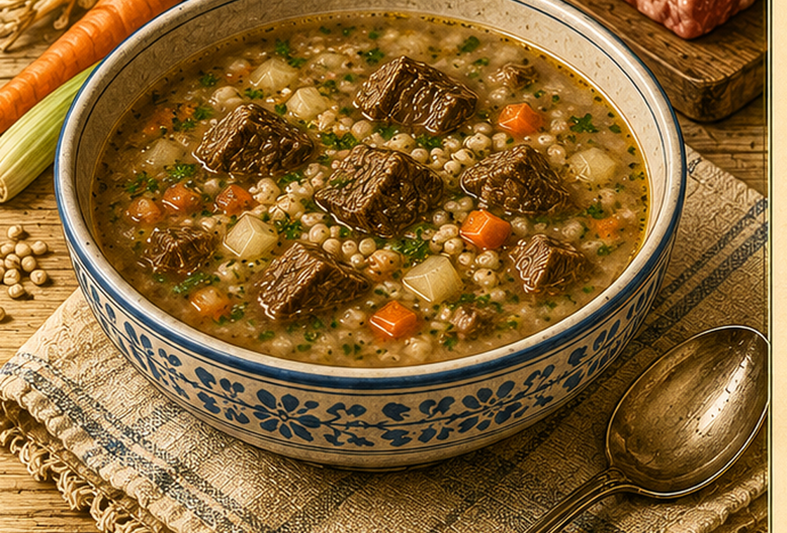

Rindfleischsuppe mit Graupen
Eine langsam gekochte Rindfleischsuppe mit Graupen, Zwiebel und einer Grießbindung.

Originale Überlieferung
„1½ Pfd. Rindfleisch wird mit ¾ l Wasser, Salz, Graupen und einer kleinen Zwiebel angesetzt und 1 Stunde gekocht. Gleichzeitig werden 65 g Grieß mit ¼ l Wasser und Salz langsam eingerührt und aufgekocht. Nach 1 Stunde schüttet man alles zusammen und lässt es noch 1½ Stunden langsam kochen.“ Die Mengenangabe der Graupen ist in der Handschrift nur schwer zu entziffern.
Moderne Übertragung
Rindfleisch, Zwiebel und Graupen werden langsam gekocht. Separat wird Grieß in Salzwasser aufgekocht. Beides kommt zusammen und gart weiter, bis Fleisch und Graupen weich sind.
Zutaten
- 750 g Rindfleisch zum Kochen
- 750 ml Wasser, bei Bedarf etwas mehr
- etwa 50 g Graupen
- 1 kleine Zwiebel
- 65 g Grieß
- 250 ml Wasser für den Grieß
- Salz
Zubereitung
- Rindfleisch, 750 ml Wasser, Graupen, Zwiebel und Salz aufsetzen.
- Bei kleiner Hitze etwa 1 Stunde sanft kochen.
- Den Grieß in 250 ml leicht gesalzenes Wasser einrühren und kurz aufkochen.
- Die Grießmischung zur Fleischsuppe geben und alles weitere 60 bis 90 Minuten sanft garen.
- Bei Bedarf Wasser ergänzen und abschmecken.